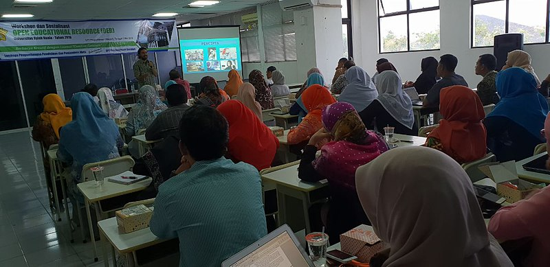
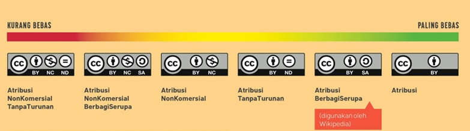
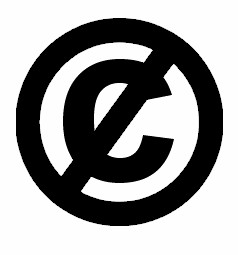
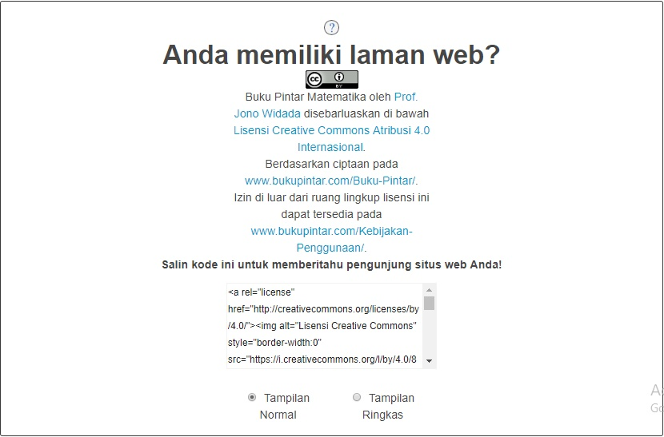

Lokakarya Lisensi Creative Commons Untuk Pengurus Perpustakaan dan Tenaga Pengajar Perguruan Tinggi di Perpustakaan Pusat Universitas Syiah Kuala

Pada tanggal 7 Mei 2018, Creative Commons Indonesia (CCID) yang diwakili oleh Hilman Fathoni berkesempatan menyampaikan materi tentang lisensi Creative Commons (lisensi CC) bekerjasama dengan Taufiq A. Ghani, Kepala Perpustakaan Pusat Universitas Syiah Kuala (UnSyiah), yang bertempat di Perpustkaan Pusat UnSyiah. Perpustakaan Pusat Unsyiah telah lama mengadopsi konsep Open Educational Resources (OER) sebagai salah satu fitur perpustakaan digitalnya. Dalam hal ini, pak Taufiq ingin agar pengetahuan mengenai tenaga pengelola perpustakaan dan tenaga pengajar pendidikan tinggi yang beliau undang ke lokakarya tersebut memperoleh pengetahuan mengenai lisensi CC, bagian yang tidak terpisahkan dari penyediaan OER.
Konsep OER (Open Educational Resources)
Gerakan sumber pembelajaran terbuka terbagi menjadi dua fokus yakni Open Education (pendidikan terbuka) dan Open Access to Research (akses terbuka untuk hasil penelitian). Dua fokus ini juga merupakan bagian tak terpisahkan dari gerakan pemajuan keterbukaan konten yang sedang terjadi di seluruh dunia.
Keterkaitan lisensi CC dengan gerakan pendidikan terbuka dapat dilihat pada 5 prinsip dasar (5rs) pendidikan terbuka:
-
Retain: Setiap konten pendidikan terbuka merupakan konten yang hak ciptanya dikontrol secara penuh oleh pencipta atau pemegang hak ciptanya. Dalam penyediaannya tidak disarankan adanya pengalihan hak cipta yang mengakibatkan eksploitasi hak cipta seorang atau sekelompok pencipta atau pemegang hak cipta oleh pihak lain secara tidak bertanggung jawab.
-
Reuse: Setiap konten pendidikan terbuka dapat digunakan secara langsung dengan pembatasan yang ditetapkan oleh pihak penyedia konten tersebut. Maksud dari dapat digunakan secara langsung ialah setiap konten ini menerapkan lisensi yang memberikan izin langsung kepada pengguna ciptaan sebagai penerima lisensi untuk menggandakan atau menyebarluaskan konten pendidikan tersebut.
-
Revise: Pihak penyedia konten pendidikan terbuka, sebagai pemberi lisensi, dapat memberikan izin langsung kepada pengguna ciptaan sebagai penerima lisensi untuk dapat turut menyunting konten pendidikan terbuka yang tersedia. Harapan dari adanya keterbukaan dalam hal penyuntingan ialah terbukanya akses diskusi antara pengajar degan pengajar atau antara murid dengan pengajar untuk mewujudkan konten pendidikan dengan kualitas yang semakin baik.
-
Remix: Pihak penyedia konten pendidikan terbuka, sebagai pemberi lisensi, dapat memberikan izin langsung kepada pengguna ciptaan sebagai penerima lisensi untuk dapat mengubah, menggubah, dan menggabungkan konten pendidikan terbuka yang ia sediakan dengan konten-konten pendidikan terbuka lain sehingga menjadi konten pendidikan terbuka yang sama sekali baru. Harapan dengan berjalannya prinsip ini adalah untuk membuka lebar kemungkinan para pencipta konten pendidikan untuk berinovasi dengan memanfaatkan sumber-sumber yang ada.
-
Redistribute: Prinsip ini pada dasarnya mirip dengan prinsip Reuse, yaitu bagaimana pihak penyedia konten pendidikan terbuka memberikan izin langsung kepada pengguna ciptaan untuk menyebarluaskan konten pendidikan terbukanya.
Perlindungan Hak Cipta
Mekanisme Perlindungan
Pada hakikatnya, seluruh obyek perlindungan hak cipta (lihat pasal 40 Undang-Undang No. 28 Tahun 2014 Tentang Hak Cipta, 1.2.) mewajibkan setiap pengguna ciptaan untuk memperoleh izin penggunaan (penggandaan dan penyebarluasan) secara langsung dari pencipta atau pemegang hak cipta dalam aktivitas penggunaan ciptaan.
Dalam hal ini, pencipta atau pemegang hak cipta wajib memenuhi beberapa prinsip juga agar ciptaannya dapat dilindungi dengan mekanisme perlindungan hak cipta. Prinsip-prinsip tersebut antara lain:
-
Untuk memperoleh perlindugan hak cipta, seorang pencipta atau pemegang hak cipta wajib mewujudkan ciptaannya terlebih dahulu. Mekanisme perlindungan hak cipta tidak melindungi suatu konsep atau ide yang hanya dipikirkan. Gagasan-gagasan ini dapat diwujudkan secara nyata (tangible) oleh pencipta atau pemegang hak cipta dengan, misalnya, membuat sebuah buku, lagu, gambar, atau ciptaan dalam format lain yang mengekspresikan gagasan tersebut. Mewujudkan ciptaan secara nyata juga merupakan jalan untuk melakukan klaim terhadap suatu konsep atau ide tersebut sebelum pihak lain melakukannya.
-
Selain itu pencipta atau pemegang hak cipta juga wajib untuk mengumumkan ciptaannya. Dalam aktivitas pengumuman tersebut, pencipta atau pemegang hak cipta telah melaksanakan perlindungan hak cipta dengan memberitahukan status perlindungan hak cipta terhadap ciptaannya. Juga menyatakan bahwa ciptaan tersebut, hak ciptanya, dipegang olehnya. Hal ini juga menjadi pembeda mekanisme perlindungan hak cipta dengan obyek perlindungan KI lainnya. Yaitu, obyek perlindungan hak cipta tidak wajib untuk didaftarkan ke Direktorak Jenderal Kekayaan Intelektual (DJKI) untuk mendapatkan perlindungan, melainkan diumumkan saja.
Setelah melaksanakan kedua hal tersebut, maka pencipta atau pemegang hak cipta memiliki kontrol eksklusif atas setiap manfaat yang muncul dari ciptaan tersebut.
Manfaat yang dimaksud dipaparkan dalam konsep perlindungan hak moral dan hak ekonomi. Hak moral melindungi hak pencipta atau pemegang hak cipta dengan mewajibkan pengguna ciptaan untuk menyebutkan nama pencipta atau pemegang hak cipta serta sumber ciptaan dengan baik. Selain itu hak moral juga mewajibkan agar setiap penggunaan ciptaan menggunakan ciptaan dengan baik, tanpa melecehkan pencipta atau pemegang hak cipta, atau menyelewengkan maksud penciptaan dari ciptaan tersebut. Arti dari penyelewengan adalah, misalnya, seorang anggota organisasi masyarakat (ormas) melakukan klaim atas suatu karya video sebagai bentuk dukungan terhadap gerakan ormasnya. Apabila pihak pencipta atau pemegang hak cipta tidak setuju dengan model penggunaan tersebut, dapat menggunakan mekanisme perlindungan hak moral untuk menghentikan distribusi karya video oleh ormas tersebut, atau bahkan meminta ganti rugi apabila permasalahan dibawa sebagai sengketa di ranah pengadilan niaga.
Hak ekonomi membantu pencipta atau pemegang hak cipta untuk menjaga manfaat komersial dari ciptaannya. Maksudnya supaya pemasukan atau royalti dari setiap penggunaan ciptaannya dalam aktivitas komersial dapat selalu tersalurkan kepada pihak pencipta atau pemegang hak cipta. Setiap pengguna ciptaan yang hendak menggunakan suatu ciptaan wajib memperoleh izin langsung terlebih dahulu dari pihak pencipta atau pemegang hak cipta. Namun, bisa saja dalam hal ini pencita atau pemegang hak cipta mengecualikan pengguna ciptaan dari beban royalti jika memang disepakati demikian dalam konteks penggunaan tertentu.
Hubungan hukum dalam ranah perlindungan hak cipta meliputi pencipta atau pemegang hak cipta dan pengguna ciptaan. Pencipta adalah pihak yang menciptakan suatu ciptaan, yang kemudian secara langsung memiliki peran sebagai pemegang hak cipta. Pemegang hak cipta belum tentu seorang pencipta, bisa saja pihak pemegang hak cipta adalah seseorang atau suatu kelompok yang dengan izin pencipta memiliki wewenang: hak dan kewajiban yang sama dengan pencipta. Tujuan pemberian izin ini biasanya adalah untuk membantu pencipta dalam mengatur mekanisme perlindungan hak ciptanya. Pengguna ciptaan adalah pihak yang bermaksud menggunakan ciptaan milik seseorang atau suatu kelompok dengan maksud untuk memperoleh manfaat dari ciptaan tersebut. Manfaat yang dimaksud dapat berupa manfaat estetis (keindahan) atau ekonomis.
Fungsi Sosial Hak Cipta
Undang-Undang No. 28 Tahun 2014 Tentang Hak Cipta (UUHC 2014) beberapa elemen fungsi sosial. Elemen-elemen tersebut antara lain adalah:
- Ciptaan-ciptaan yang tidak dilindungi (Pasal 42)
Dalam bagian ini, UUHC 2014 menjabarkan beberapa jenis ciptaan yang tidak dapat dilindungi oleh mekanisme perlindungan hak cipta di Indonesia. Arti dari pengecualian ciptaan-ciptaan ini dari mekanisme perlindungan hak cipta ialah seluruh pengguna ciptaan dapat menggunakan ciptaan-ciptaan tersebut, termasuk untuk kepentingan komersial, tanpa izin langsung dari pihak terkait (pencipta atau pemegang hak cipta). Namun, pengguna ciptaan wajib untuk tetap menyebutkan nama pencipta atau pemegang hak cipta dan/atau sumber ciptaan dalam setiap aktivitas penggunaan. Dan, setiap aktivitas penggunaan bukan merupakan aktivitas yang termasuk dalam kategori perbuatan melanggar hukum ataupun standar etika yang berlaku.
- Hasil Rapat Terbuka Lembaga Negara (contoh 1)
Ciptaan yang dirujuk dalam poin ini adalah isi dari setiap rapat yang diselenggarakan oleh Lembaga Negara. Dalam hal ini setiap rapat yang terbuka untuk umum, bukan rapat tertutup yang membahas hal-hal yang bersifat rahasia negara. Jika hasil rapat terbuka dipublikasikan oleh media daring, seperti ini, maka yang dapat digunakan oleh pengguna ciptaan atau tidak dilindungi oleh mekanisme perlindungan hak cipta adalah isi hasil rapat yang dikutip sebagai berita oleh media tersebut. Keseluruhan artikel atau berita yang diumumkan oleh media tersebut hak ciptanya masih tetap dipegang oleh reporter dan/atau kantor berita tersebut sebagai badan hukum.
- Peraturan Perundang-Undangan (contoh)
Setiap peraturan perundang-undangan yang diterbitkan oleh Pemerintah dapat langsung digunakan oleh publik secara bertanggung jawab.
Sama halnya dengan hasil rapat terbuka lembaga negara, yang dirujuk sebagai ciptaan yang langsung dapat digunakan oleh pengguna ciptaan ialah isi dari pidato-pidato tersebut. Jika sebuah media mengutip isi pidato tersebut, maka yang dapat pengguna ciptaan langsung gunakan adalah kutipan isi pidatonya, bukan keseluruhan artikel yang mengandung kutipan pidato tersebut.
- Putusan Pengadilan atau Penetapan Hakim (contoh)
Setiap putusan pengadilan atau penetapan hakim yang dikeluarkan oleh lembaga yudikatif seperti Mahkamah Agung dapat langsung digunakan oleh pengguna ciptaan secara bertanggung jawab. Prinsip ini sama halnya dengan kebijakan keterbukaan informasi yang dilaksanakan dengan pembuatan portal-portal data terbuka.
- Kitab Suci atau Simbol Keagamaan
Dalam hal ini Peraturan Perundang-Undangan belum memberikan penjelasan apakah Kitab suci atau simbol keagamaan yang dimaksud adalah yang diakui oleh Negara Republik Indonesia atau juga yang lainnya.
- Penggunaan wajar (Pasal 43-51)
Pada prinsipnya konsep ini merupakan daftar pengecualian beberapa perbuatan yang tidak dianggap sebagai pelanggaran hak cipta. Perbuatan-perbuatan yang dikecualikan ini kemudian paling tidak dibagi lagi ke dalam 3 kategori:
- Berdasarkan Lembaga
Dalam konsep pembatasan perlindungan hak cipta, lembaga yang bergerak di ranah pengarsipan diizinkan untuk menggandakan ciptaan tanpa izin langsung pencipta atau pemegang hak cipta sebanyak 1 kopi untuk disimpan dan digunakan jika ciptaan yang merupakan materi asli rusak atau hilang. Kemudian, apabila lembaga tersebut merupakan lembaga negara, Kepolisian misalnya, diizinkan untuk menggunakan ciptaan tanpa izin langsung pencipta atau pemegang hak cipta dalam aktivitas penyidikan yang mereka laksanakan. Setiap wewenang yang merupakan pekerjaan suatu lembaga negara dapat mengecualikan tiap pekerjanya sebagai pengguna ciptaan dari mekanisme perlindungan hak cipta.
- Berdasarkan Tujuan
Dalam konsep pembatasan perlindungan hak cipta, setiap perbuatan penggandaan atau penyebarluasan ciptaan oleh pengguna ciptaan dalam aktivitas berbagi ciptaan yang dilakukan di ranah daring, apabila dilakukan tanpa izin langsung pencipta atau pemegang hak cipta, dikecualikan dari kategori pelanggaran hak cipta selama sumber atau nama pencipta atau pemegang hak cipta disebutkan dan bukan merupakan aktivitas komersial. Kemudian, penggandaan atau penyebarluasan konten berita aktual yang diterbitkan oleh suatu kantor berita dapat, apabila dilakukan tanpa izin langsung dari pihak penulis atau penerbit artikel, dapat dikecualikan dari kategori pelanggaran hak cipta jika sumber artikel yang digandakan atau disebarkan tetap disebut.
- Berdasarkan Pengguna
Dalam konsep pembatasan perlindungan hak cipta, setiap penggunaan ciptaan yang dimaksudkan untuk membuka akses ciptaan tersebut terhadap penyandang tuna netra atau keterbatasan dalam membaca dikecualikan dari kategori pelanggaran hak cipta meskipun dilaksanakan tanpa izin langsung dari pihak pencipta atau pemegang hak cipta. Selain itu, penggandaan ciptaan sebanyak 1 kopi juga dapat dilakukan oleh pengguna ciptaan, di luar konteks penggunaan untuk penyandang tuna netra, dapat dilaksanakan tanpa izin langsung pencipta dan dikecualikan dari kategori pelanggaran hak cipta apabila dilaksanakan untuk kepentingan pribadi, bukan untuk diumumkan kembali.
- Masa berlaku perlindungan hak cipta (Pasal 57-61)
Memahami masa berlaku perlindungan hak cipta harus merujuk pada pembagian ketentuan berdasarkan ciptaannya. Paling tidak kita dapat memahami hal tersebut dengan memisahkannya menjadi dua bagian:
- Teks, rekaman suara, karya seni rupa, dan lain-lain (Pasal 58)
Masa berlaku perlindungan hak cipta untuk ciptaan-ciptaan yang disebutkan dalam Pasal 58 adalah seumur hidup pencipta ditambah 70 tahun, dan mulai masuk ke domain publik pada tanggal 1 januari satu tahun setelahnya. Apabila ciptaan diciptakan atau pemegang hak ciptanya dua orang atau lebih maka masa berlaku dihitung dari pencipta atau pemegang hak cipta yang meninggal paling akhir. Selain itu, apabila ciptaan terkait hak ciptanya dipegang oleh badan hukum, maka masa berlakunya adalah 50 tahun setelah ciptaan pertama kali diumumkan. Apabila penciptanya tidak diketahui (orphaned works) maka ciptaan tersebut hak ciptanya dipegang oleh negara, dan masa berlakunya habis 50 tahun setelah diumumkan.
- Karya fotografi, karya sinematografi, program komputer dan lain-lain (Pasal 59)
Masa berlaku perlindungan hak cipta untuk semua ciptaan yang disebutkan dalam Pasal 59 adalah 50 tahun sejak pertama kali ciptaan diumumkan.
Ketentuan di atas ialah informasi penentuan masa berlaku perlindungan hak ekonomi. Ketentuan masa berlaku perlindungan hak moral memiliki mekanisme yang sedikit berbeda. Pada prinsipnya hak moral berlaku tanpa batas waktu. Namun, hak moral yang berfungsi untuk melindungi ciptaan seorang pencipta atau pemegang hak cipta dari aktivitas pengubahan dan/atau penggubahan ciptaan akan hilang mengikuti ketentuan masa berlaku perlindungan hak ekonomi.
Lisensi Hak Cipta
Menurut Angka 20 Ketentuan Umum UUHC 2014, lisensi hak cipta adalah sebuah izin tertulis yang berfungsi sebagai pemberitahuan oleh pencipta atau pemegang hak cipta kepada pengguna ciptaan mengenai pelaksanaan hak dan kewajiban dari aktivitas penggunaan suatu ciptaan. Intinya, izin tersebut menyatakan apa yang boleh dan tidak boleh dilakukan oleh pengguna ciptaan terhadap suatu ciptaan. Bentuk lisensi hak cipta dapat dipahami dengan membaginya ke dalam dua bentuk:
-
Lisensi ke dalam memiliki bentuk yang kurang lebih sama dengan perjanjian-perjanjian pada umumnya. Biasanya lisensi dengan bentuk ini aksesnya tidak terbuka. Lisensi ini hanya dapat diakses oleh pihak-pihak yang dengan terang disebutkan di dalam perjanjian lisensi sebagai pihak yang terikat dengan ketentuan lisensi. Karena sifatnya yang privat, lisensi dengan bentuk ini biasanya hanya mengikat beberapa pihak saja.
-
Lisensi ke luar dapat disebut sebagai lisensi publik. Akses untuk melihat ketentuan lisensi ini terbuka bagi pihak-pihak yang hendak mengikatkan diri dalam suatu hubungan hukum, dalam hal ini aktivitas penggunaan ciptaan. Lisensi dengan bentuk ini dapat mengikat banyak pihak sekaligus karena sifatnya yang terbuka. Pada intinya ketentuan lisensi ini mengikat pencipta atau pemegang hak cipta dengan semua pengguna ciptaan yang menggunakan ciptaan yang diumumkan dengan ketentuan lisensi ini.
Selain itu, lisensi juga dapat dibagi berdasarkan sifat ketentuannya, yaitu:
- Lisensi Tertutup: Secara sederhana, lisensi tertutup biasanya dinyatakan dengan ungkapan “all rights reserved” (seluruh hak dipertahankan). Artinya, pihak pencipta atau pemegang hak cipta sepakat dengan mekanisme perlindungan hak cipta tradisional. Di mana seluruh pengguna ciptaan yang dapat mengakses ciptaannya harus mendapatkan izin langsung atau melakukan interaksi secara langsung dengan pencipta atau pemegang hak cipta untuk kemudian menggunakan ciptaan sesuai dengan kebutuhannya. Lisensi ini ada seketika setelah ciptaan diciptakan dan diumumkan.

- Lisensi Terbuka: Biasanya, meskipun tidak selalu, dinyatakan dengan ungkapan “some rights reserved” (beberapa hak dipertahankan). Sifat terbuka dari lisensi ini biasanya dinyatakan dengan ketentuan yang langsung mengizinkan penggandaan dan penyebarluasan ciptaan oleh pengguna ciptaan. Lisensi ini biasanya dilengkapi dengan ketentuan pilihan yang nantinya ditentukan oleh pencipta atau pemegang hak cipta untuk mengatur hak penggunaan ciptaan pengguna ciptaan. Jenis lisensi ini diterapkan oleh pencipta atau pemegang hak cipta yang ingin memberikan akses terbuka dan legal kepada pengguna ciptaan dalam aktivitas penggunaan ciptaannya. Penentuan ketentuan lisensi hak cipta oleh pihak pencipta atau pemegang hak cipta sesuai dengan bunyi Pasal 81 UUHC 2014. Sifat pembuatanya yang mandiri menyebabkan terciptanya produk lisensi terbuka yang beragam, seperti GNU General Public License, Open Governmet License, dan termasuk Lisensi Creative Commons.
Lisensi hak cipta dapat menjadi alat penyederhana bahasa hukum dari UUHC. Dengan begitu dialog antara pencipta atau pemegang hak cipta akan menjadi semakin mudah. Karena tidak semua pihak-pihak terkait dalam hubungan hukum di ranah perlindungan hak cipta memiliki pengetahuan atau dapat langsung memahami mekanisme perlindungan hak cipta dengan membaca peraturannya. Selain itu dengan mengetahui perbedaan jenis lisensi dan isi ketentuannya, pengguna ciptaan dapat membedakan mana ciptaan yang dapat diakses secara gratis saja dan mana ciptaan yang dapat diakses secara gratis dan terbuka. Maksud terbuka dalam hal ini adalah ciptaan-ciptaan tersebut selain dapat diunduh dan disebarluaskan secara gratis, juga mengandung izin langsung yang memungkinkan pengguna ciptaan untuk menggubah atau menggunakan ciptaan dalam kepentingan komersial.
Lisensi Creative Commons
Pemaparan tentang lisensi CC diawali dengan beberapa pertimbangan yang harus diketahui pencipta atau pemegang hak cipta (pemberi lisensi) sebelum menerapkan lisensi tersebut pada ciptaanya, yaitu sebagai berikut: (Daftar ini merupakan hasil pembaruan yang merujuk ketentuan dari laman ini)
- Ketentuan lisensi yang diterapkan tidak dapat dicabut (irrevocable);
Misalnya, ciptaan yang pertama kali diumumkan dengan izin penggunaan untuk kepentingan komersial kepada pengguna ciptaan dicabut ketentuan lisensinya dan diganti dengan ketentuan lisensi yang bertolak belakang dari ketentuan lisensi sebelumnya. Penerima lisensi dari ketentuan sebelumnya akan terikat dengan ketentuan lisensi yang baru dalam setiap penggunaan ciptaan setelah ketentuan tersebut berlaku. Ketentuan ini ada untuk menghindari terjadinya sengketa dengan asumsi bahwa ciptaan sudah digunakan dan disediakan di berbagai tempat yang berbeda oleh berbagai pengguna. Pengguna yang merujuk ketentuan lisensi pada saat ciptaan tersebut pertama kali diumumkan. Asumsi lain ialah informasi tentang berubahnya ketentuan lisensi belum tentu sampai ke semua pengguna ciptaan yang merujuk pada ketentuan lisensi sebelumnya.
Tentu saja risiko sengketa ini tidak berlaku pada perbuatan yang terjadi di masa lampau (sebelum ketentuan lisensi baru berlaku). Pembicaraan selesai karena dalam konteks hukum Indonesia (asas non-retroaktif) tidak memungkinkan adanya gugatan terhadap pelanggaran hukum sebelum sebuah peraturan atau suatu ketentuan berlaku. Maka dari itu, pengubahan ketentuan lisensi menghadirkan risiko nyata bagi pengguna ciptaan yang tidak menerima informasi mengenai pengubahan ketentuan lisensi dengan baik. Sengketa yang berakar dari kesalahpahaman sangat bisa terjadi apabila pencipta atau pemegang hak cipta menemukan penggunaan ciptaan yang menyalahi ketentuan lisensinya yang baru karena pengguna ciptaan tersebut masih merujuk ketentuan yang lama dari tempat ia mengakses ciptaan tersebut.
Hal ini menjadi alasan fundamental CC untuk tidak merekomendasikan pengubahan/pencabutan ketentuan lisensi CC yang sudah diterapkan. Meskipun bukan berarti pencipta atau pemegang hak cipta dilarang sama sekali untuk mengubah atau mencabut ketentuan lisensi yang sudah diterapkan dengan akibat hukum sebagaimana disebutkan di atas. Namun yang menjadi pertimbangan adalah ketika pemberi lisensi mengganti “isi perjanjian” yang mereka perjanjikan dengan penerima lisensi merupakan hal yang tidak etis. Kecuali, pemberi lisensi dapat menjamin atau mengurangi risiko sengketa dengan menarik ciptaan dari peredaran sama sekali atau mengumumkan pengubahan ketentuan lisensi tersebut seluas mungkin.
- Pastikan ciptaan dapat dilisensikan dengan lisensi CC;
Lisensi CC hanya berlaku pada obyek perlindungan hak cipta saja (lihat pasal 40 Undang-Undang No. 28 Tahun 2014 Tentang Hak Cipta). Meskipun lisensi CC terinspirasi oleh lisensi seperti GNU General Public License, program komputer dikecualikan sebagai obyek penerapan lisensi CC. Karena ketentuan lisensi CC, baik lisensi ringkas maupun lisensi lengkap, tidak sesuai untuk diterapkan pada program komputer. Hal-hal mengenai ketentuan penggunaan serta perlindungan program komputer sebagai konten terbuka secara spesifik dapat ditemukan pada lisensi terbuka yang sebelumnya sudah populer diterapkan pada program komputer, contoh lain selain GNU adalah MIT License. Dalam lisensi-lisensi tersebut dipaparkan secara spesifik bagaimana pengguna program komputer sebagai penerima lisensi dapat menggunakan bagian-bagian (misalnya, kode sumber porgram komputer) program komputer.
- Tandai ciptaan dengan ketentuan lisensi yang sesuai;
Seorang pencipta atau pemegang hak cipta dapat menerapkan ketentuan lisensi yang berbeda pada ciptaan yang berbeda pada satu tempat di mana pihak tersebut menyediakan ciptaan. Misalnya, pihak tersebut dapat menerapkan ketentuan lisensi A pada ciptaan teks A, kemudian lisensi B pada ciptaan karya fotografi A, dan ketentuan lisensi C pada ciptaan lain yang tersedia di tempat pihak tersebut menyediakan ciptaan-ciptaannya. Fungsi dari penandaan ini ialah untuk memberikan pemberitahuan ciptaan secara spesifik bahwa beberapa ciptaan di tempat tersebut dikecualikan dari satu ketentuan lisensi yang pada dasarnya diterapkan pada seluruh ciptaan di tempat tersebut. Selain itu, penandaan ini juga biasanya dilakukan sebagai penerapan atribusi ciptaan pihak lain yang menerapkan ketentuan lisensi yang berbeda.
- Ciptaan yang dilisensikan harus merupakan ciptaan sendiri, atau diizinkan oleh pencipta atau pemegang hak cipta lain untuk melisensikan ciptaan dengan lisensi CC;
Seorang pengguna ciptaan di dalam jaringan bisa saja mengunggah suatu ciptaan yang bukan miliknya untuk diumumkan melalui suatu situs web. Jika pencipta atau pemegang hak cipta ciptaan tersebut belum menyatakan ketentuan penggunaan dengan suatu ketentuan lisensi, pengguna ciptaan tidak dapat menerapkan suatu ketentuan lisensi pada ciptaan yang diunggahnya. Untuk dapat melaksanakan hal tersebut, pengguna ciptaan harus memperoleh izin sekaligus pernyataan terlebih dahulu dari pencipta atau pemegang hak cipta seperti sistem OTRS di Wikimedia Commons berikut ini. Selain itu, seseorang dapat menerapkan ketentuan lisensi pada suatu ciptaan selama ciptaan tersebut merupakan ciptaannya.
- Tentukan ketentuan penggunaan ciptaan yang hendak diterapkan;
Faktor ini merupakan hal yang mendasar sebelum suatu pihak menjadi pemberi lisensi CC. Calon pemberi lisensi harus memahami fungsi pemilihan ketentuan lisensi terlebih dahulu. Misalnya dengan membaca laman penjelasan 4 spektrum ketentuan atau hasil kombinasinya yaitu 6 pilihan lisensi CC. Dengan memahami hal ini, pemberi lisensi dapat menerapkan ketentuan lisensi CC yang sesuai dengan kemauannya pada ciptaannya.
- Setiap ciptaan berlisensi CC dapat langsung digandakan dan disebarluaskan;
Hal ini sejalan dengan logika penyediaan ciptaan di dalam jaringan. Karena pada dasarnya setiap ciptaan yang dapat diakses secara terbuka di ranah daring dapat langsung digandakan dan disebarluaskan. Maka dari itu lisensi CC memberikan legitimasi secara tertulis sebagai landasan hukum pengguna ciptaan (penerima lisensi) pada aktivitas-aktivitas tersebut.
- Penerapan Digital Rights Management dilarang untuk ciptaan berlisensi CC;
Sebagaimana disebutkan dalam poin sebelumnya, lisensi CC memungkinkan pengguna ciptaan untuk memperoleh izin langsung untuk menggandakan dan menyebarluaskan ciptaan. Digital Rights Management (DRM) atau sarana kontrol teknologi adalah teknologi perlindungan ciptaan yang dapat menghambat pengguna ciptaan untuk menggunakan ciptaan, misalnya dalam hal penggandaan dan penyebarluasan ciptaan. Misalnya, pencipta atau pemegang hak cipta menutup akses untuk pengunduhan ciptaan yang diunggah di dalam jaringan. Maka dari itu, model perlindungan ini tidak relevan untuk diterapkan pada ciptaan berlisensi CC.
Lisensi CC terdiri atas 4 spektrum pilihan yang dapat dikombinasikan menjadi 6 pilihan lisensi. Selain itu, terdapat 2 penanda ciptaan lain dari CC yaitu CC0 Dedikasi Domain Publik dan Tanda Domain Publik Creative Commons.
Berikut isi dari ketentuan-ketentuan lisensi dan penanda ciptaan tersebut.
4 spektrum utama lisensi CC:
(1) Spektrum Atribusi (BY)

-
Isi ketentuan:
-
Kewajiban untuk menyebutkan nama pencipta atau pemegang hak cipta dan sumber ciptaan.
-
Menyatakan perubahan yang dilakukan terhadap ciptaan.
-
-
Fungsi:
-
Supaya pencipta atau pemegang hak cipta dapat terus disebutkan namanya sebagai sumber rujukan dalam setiap penggunaan.
-
Untuk mengingatkan pengguna agar terus menyebutkan sumber ciptaan yang digunakan dengan sesuai.
-
Untuk mengingatkan pengguna agar menyatakan perubahan yang dilakukan terhadap ciptaan.
-
-
Kombinasi Spektrum:

-
Contoh penerapan:
-
Situs web Portal Data Indonesia (CC BY)
-
Situs web ikon The Noun Project (CC BY)
-
(2) Spektrum BerbagiSerupa (SA)

-
Isi ketentuan:
- Kewajiban untuk menerapkan lisensi yang sama pada setiap hasil gubahan dan karya turunan
-
Fungsi:
-
Tujuan penciptaan dan penyediaan ciptaan memang ditujukan sebagai ciptaan layak gubah.
-
Untuk mempertahankan maksud penerapan lisensi pada materi asli oleh pencipta.
-
-
Kombinasi Spektrum:


-
Lisensi CC BY-SA (Atribusi-BerbagiSerupa) dan Lisensi CC BY-NC-SA (Atribusi-NonKomersial-BerbagiSerupa)
-
Contoh penerapan:
-
Situs web Wikipedia (CC BY-SA)
-
Situs web Wikimedia Commons (CC BY-SA)
-
(3) Spektrum NonKomersial (NC)

-
Isi ketentuan:
-
Larangan penggunaan ciptaan untuk kepentingan komersial.
-
Kegiatan nirlaba dikecualikan dari ketentuan ini.
-
-
Fungsi:
-
Mempertahankan jalur masuknya royalti secara eksklusif ke pencipta atau pemegang hak cipta.
-
Ketentuan SA yang dikombinasikan dengan NC, memastikan bahwa setiap hasil gubahan menerapkan ketentuan NonKomersial, supaya ciptaan tidak dapat dikomersialisasi tanpa izin pencipta atau pemegang hak cipta.
-
-
Kombinasi Spektrum:


-
Lisensi CC BY-NC (Atribusi-NonKomersial), Lisensi CC BY-NC-SA (Atribusi-NonKomersial-BerbagiSerupa), dan Lisensi CC BY-NC-ND (Atribusi-NonKomersial-TanpaTurunan)
-
Contoh penerapan:
(4) Spektrum TanpaTurunan (ND)

-
Isi ketentuan:
-
Larangan untuk mengubah dan menggubah ciptaan.
-
Penggunaan pribadi dikecualikan (pengubahan atau penggubahan yang tidak diumumkan).
-
-
Fungsi:
-
Menghindari manipulasi atau pemanfaatan ciptaan secara tidak bertanggung jawab.
-
Menghindari pelanggaran kehormatan terhadap pencipta atau pemegang hak cipta dari aktivitas pengguna ciptaan.
-
-
Kombinasi Spektrum:

-
Lisensi CC BY-ND (Atribusi-TanpaTurunan) dan Lisensi CC BY-NC-ND (Atribusi-NonKomersial-TanpaTurunan).
-
Contoh penerapan:
- Situs web Katadata (CC BY-ND)
(5) Creative Commons Nol Dedikasi Domain Publik (CC0)

-
Isi dan fungsi ketentuan:
-
Setiap ciptaan yang diumumkan dengan ketentuan ini masuk ke domain publik tanpa mengindahkan ketentuan masa berlaku perlindungan hak cipta yang ada.
-
Pencipta atau pemegang hak cipta memberikan kebebasan mengabaikan hak moral dan hak ekonominya sama sekali dengan menerapkan lisensi ini.
-
Pencipta atau pemegang hak cipta dapat menerapkan atau pengguna ciptaan dapat menggunakan ciptaan dengan ketentuan ini sejauh hukum yang berlaku dapat mengakomodasi aktivitas ini.
-
Dalam konteks hukum Indonesia, penggunaan lisensi ini tidak direkomendasikan, karena belum ada payung hukum yang mengakomodasi pendedikasian hak cipta pencipta atau pemegang hak cipta sepenuhnya ke domain publik sebelum masa berlaku perlindungannya berakhir.
-
-
Kombinasi Spektrum:

-
Contoh penerapan:
- Situs web WikiData (CC0)
(6) Tanda Domain Publik Creative Commons (Tanda Domain Publik CC)

-
Isi dan fungsi ketentuan:
-
Hanya diterapkan pada ciptaan yang sudah habis masa berlaku perlindungan hak ciptanya.
-
Banyak digunakan oleh lembaga-lembaga seperti galeri, perpustakaan, balai pengarsipan, dan museum.
-
-
Kombinasi Spektrum:

-
Contoh penerapan:
Contoh-contoh yang digunakan pada penjelasan di atas ialah proyek atau situs web yang menerapkan one license policy atau satu ketentuan lisensi untuk semua konten. Namun, terdapat pula proyek atau situs web lain yang menerapkan banyak ketentuan lisensi CC pada konten-kontennya. Dengan adanya ketentuan semacam ini, proyek-proyek atau situs web-situs web ini memberikan pilihan kepada pengguna ciptaan untuk memilih ciptaan berdasarkan ketentuan lisensi yang sesuai dengan kebutuhannya. Hal semacam ini diperlukan karena rasio atau spektrum dipilih dan diterapkan sesuai dengan motif penciptaan ciptaan dari masing-masing pencipta atau pemegang hak cipta.
Flickr memberikan pilihan kepada pencipta atau pemegang hak cipta untuk menerapkan ketentuan all rights reserved, enam pilihan lisensi CC, lisensi CC0 Dedikasi Domain Publik, dan Tanda Domain Publik CC.
-
[Creative Commons di Freemusicarchive (FMA)] (https://freemusicarchive.org)
-
FMA memberikan pilihan kepada pencipta atau pemegang hak cipta untuk menerapkan ketentuan all rights reserved, enam pilihan lisensi CC, dan Tanda Domain Publik CC.
-
[Creative Commons di Directory of Open Access Journal (DOAJ)] (https://doaj.org)
-
DOAJ memberikan pilihan kepada pencipta atau pemegang hak cipta untuk menerapkan satu diantara enam pilihan lisensi CC, dan Tanda Domain Publik CC.
Berikut petunjuk teknis untuk menerapkan lisensi CC pada ciptaan:
(1) Kunjungi creativecommons.org/share-your-work/

(2) Klik tombol “Get Started”

(3) Isi formulir pemberian izin kepada pengguna ciptaan sesuai dengan keinginan

(4) Mesin akan menampilkan ketentuan lisensi yang sesuai dengan apa yang pencipta atau pemegang hak cipta isi pada formulir pemberian izin

(5) Lengkapi atau modifikasi ketentuan atribusi yang dibebankan kepada pengguna ciptaan

(6) Lisensi dapat ditempelkan pada situs web dengan memasang kode html yang tersedia

(6.5) Pengguna ciptaan dapat membaca isi ketentuan lisensi yang dipilih pencipta atau pemegang hak cipta dengan membuka tautan yang dipasang pada teks lisensi di bawah gambar pilihan lisensi yang diterapkan


(8) Pengguna ciptaan dapat memilih bahasa apa yang ditampilkan pada ketentuan lisensi yang diterapkan
(9) Tampilan laman untuk menggunakan CC0 Dedikasi Domain Publik dan Tanda Domain Publik CC

(10) Isi kolom jawaban formulir sesuai dengan pertanyaan yang diajukan

(11) Baca kemudian tandai pernyataan pendedikasian hak cipta ke domain publik

(12) Konfirmasi sikap pendedikasian hak cipta ke domain publik sampai akhir

(13) Pemberitahuan pendedikasian hak cipta ke domain publik dapat ditempelkan pada situs web dengan memasang kode html yang tersedia

(14) Isi kolom jawaban formulir sesuai dengan pertanyaan yang diajukan

(15) Tanda domain publik dapat ditempelkan pada situs web dengan memasang kode html yang tersedia

Sebagai pengguna ciptaan, berikut daftar petunjuk teknis pencarian ciptaan berlisensi CC yang dapat dimanfaatkan:
Cara mencari ciptaan berlisensi CC di Youtube, Google Images Search, dan CC Search Beta
(1) Fitur penyaringan gambar berlisensi CC di mesin pencari gambar Google
(2) Mesin Pencari Creative Commons (beta)
(3) Fitur penyaringan video berlisensi CC di Youtube
Tags:
Oleh: Hilman Fathoni
8 May 2018Kategori:
Berita Terbaru
- Lokakarya Hak Cipta dan Lisensi Creative Commons di Pekanbaru
- Pengumuman Resmi: Hasil Akhir Training of Trainers Creative Commons Indonesia
- Literatur tentang Model Bisnis Terbuka "Made With CC"
- Data dan Artikel Ilmiah Terbuka dari PLOS!
- Konten Format Model 3 Dimensi Berilsensi CC di Platform Sketchfab